Importing 3D avatars and hybrid avatars
We’ve taken the best 3D avatars and merged them with the ease of 2D avatars to create hybrid avatars.
Hybrid construction combines the technology used to make a 2D face, which simplifies the process of rigging, animating, and overlapping, with the body construction process of a 3D avatar.
The following import process can be used for both types of avatars.
Open the Animaze Editor, navigate to Assets and select Import 3D Object.
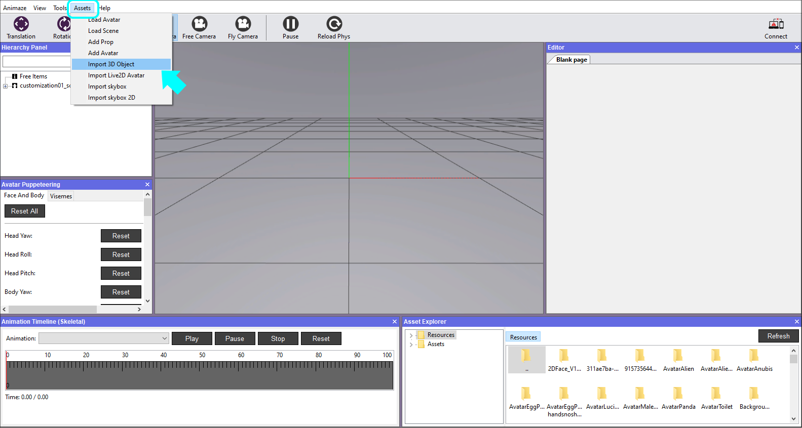
Open the model's geometry file, the .fbx file, from the location you downloaded the files.
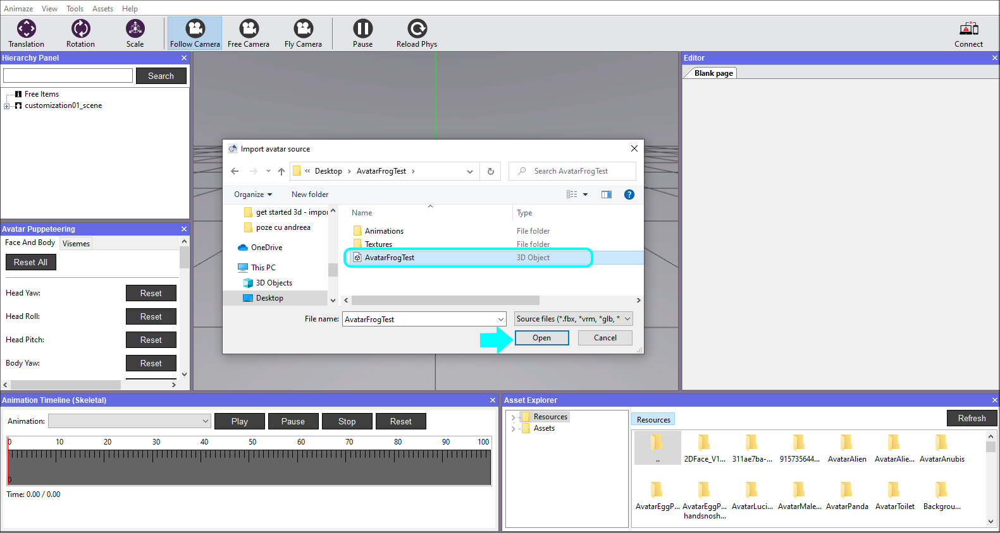
Select the files you want to import. If this is your first time importing a specific model, make sure all the files are marked and select the item type from the dropdown list before clicking Import.
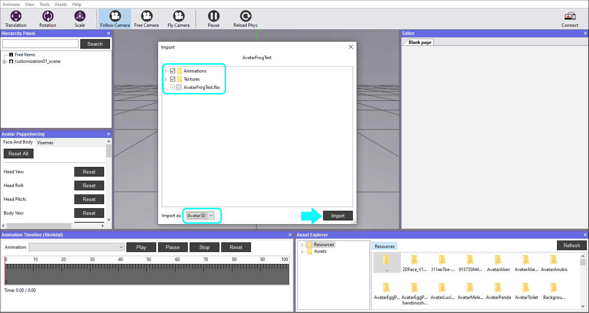
After the Animaze Editor checks the files for issues, an import issues report displays. The warning system checks for skeletal animations. The “Required animation not found” error will display if the Editor cannot find the corresponding skeletal animation in the source files. This warning will trigger even if there is a valid Blendshape that fills the role of the missing skeletal animation. When using blendshapes instead of animations, click X to ignore the animation warning message.
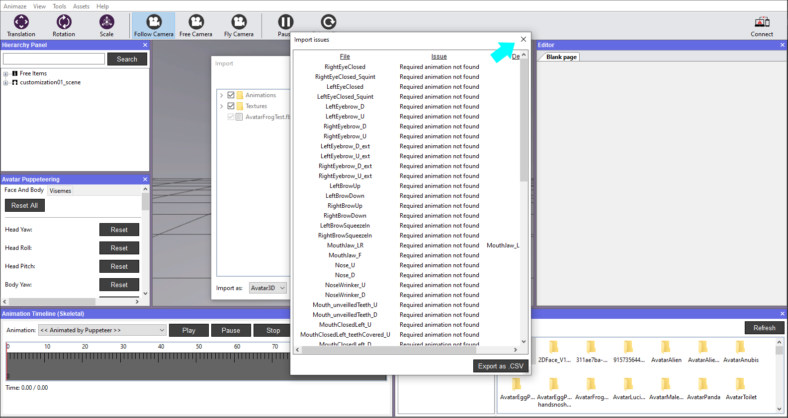
Next, there's a verbose log that prompts for every import. Hit the Ok button to dismiss it. As you work on more complicated models, these logs will surface errors and help you with debugging.
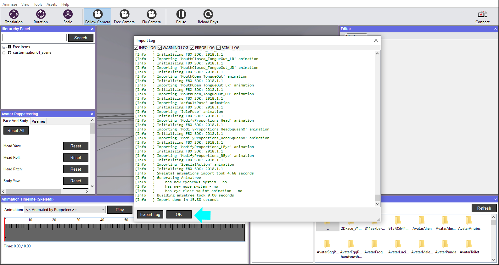
Once the avatar is imported, it will be visible in the Viewport. Click on it in the Hierarchy Panel to display its details (icon, type, name, position etc) in the Editor Panel (right side).
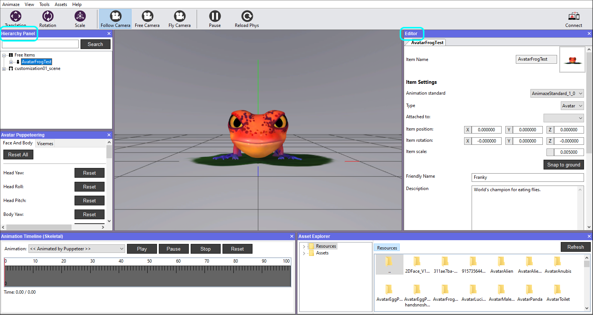
Save item in the Hierarchy Panel as a final step.
Check out all the things you can do with your avatar in the dedicated section in our documentation.
Once you’ve finished playing around with the Editor’s settings, it’s time to bundle your avatar.
To do so, in the Hierarchy Panel on the left side of the screen, right-click the avatar’s name and choose Bundle.
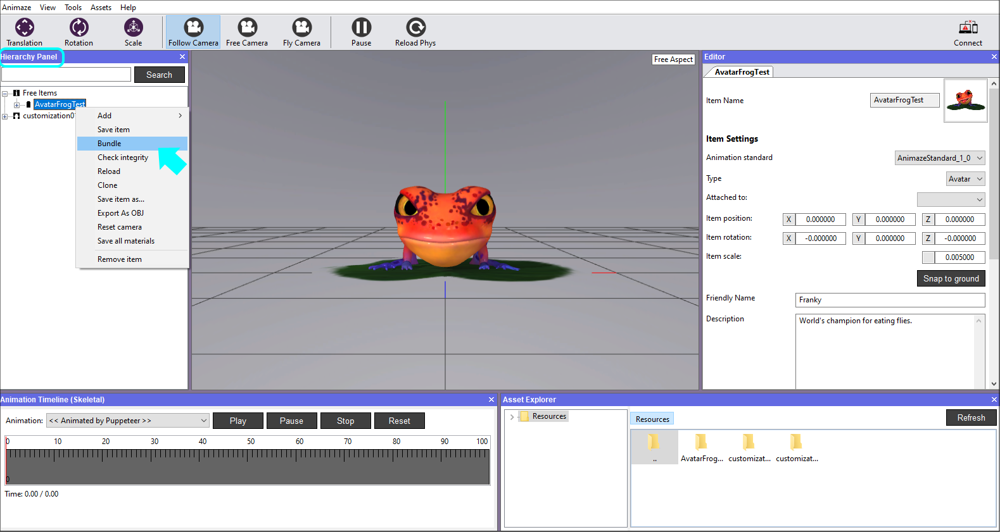
A new window will prompt you to save the changes to the avatar prior to bundling it.
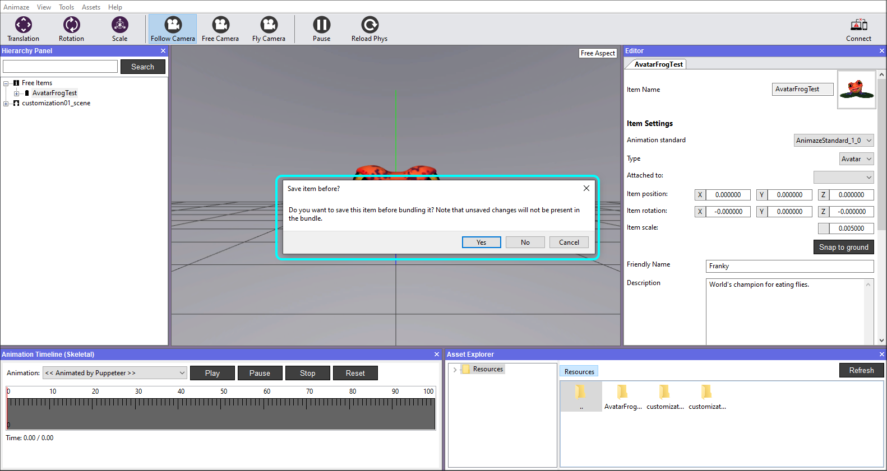
Select the folder you want to find the exported bundle. By default, the system will put it in the Resource directory of the editor. You can change the save location at any time. Once you decide, click Select Folder.
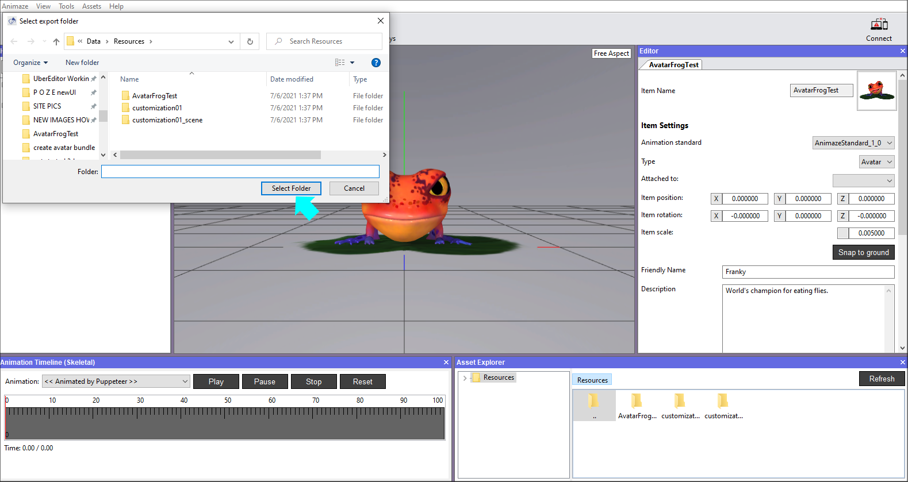
The system notifies the completion of the bundling process. Click OK.
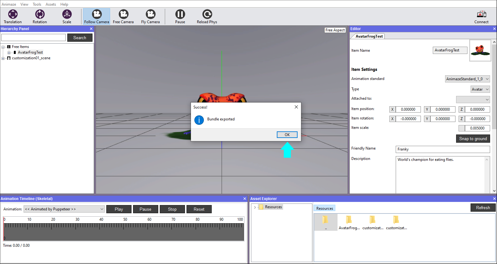
Now you can import the bundle in the Animaze desktop application. Open Animaze, then drag and drop the bundle from its location into Animaze.

The imported bundle is in the Avatar Gallery, in the Imports tab.
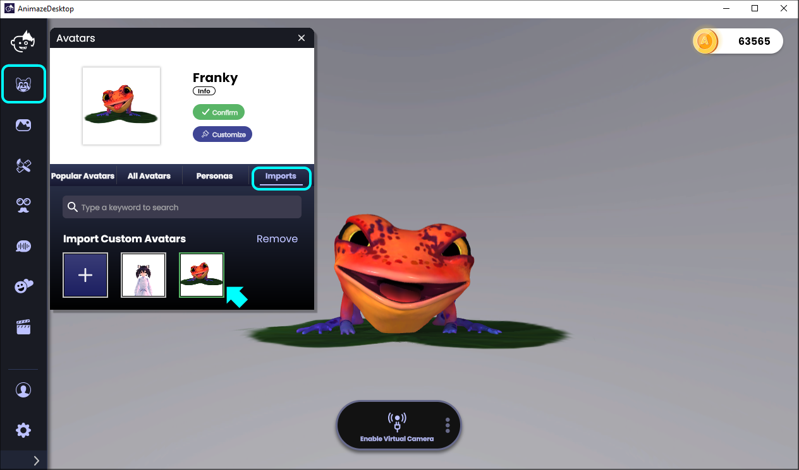